| Pictures taken during the Workshop
(Thanks to Alexander Ilyinsky from Moscow)
Most of the participants 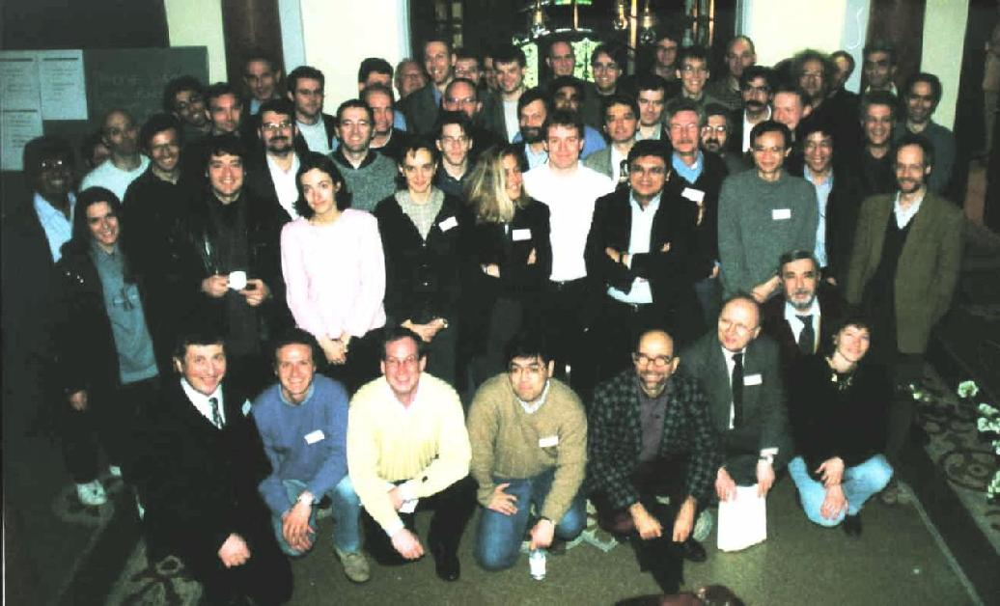
During the lectures 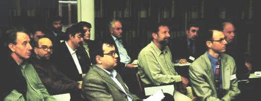 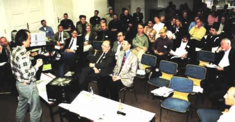 Some of the speakers left: Werner Ebeling (Berlin), right: Janusz Holyst (Warsaw) 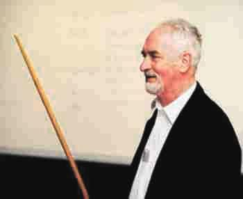 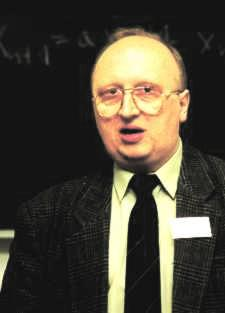
left: Matteo Marsili (Trieste), middle: Kim Sneppen (Copenhagen), right: Sorin Solomon (Jerusalem) 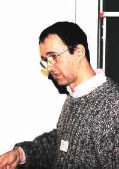 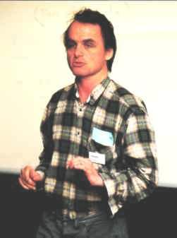 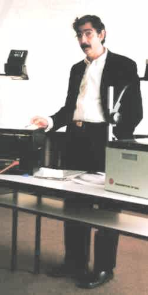
left: H. Eugene Stanley (Boston), right: Gerard Weisbuch (Paris) 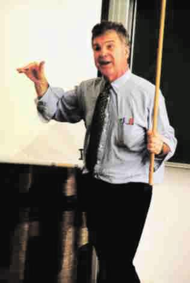 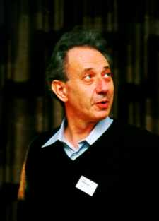
The scientific organizers of the workshop left: Frank Schweitzer (Sankt Augustin) , right: Dirk Helbing (Stuttgart) 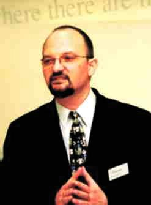 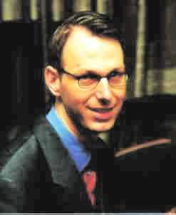 Dr. Ernst Dreisigacker, the Managing Director of
the Heraeus Foundation 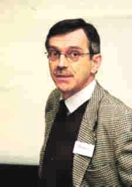
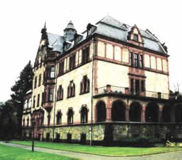
The Physikzentrum Bad Honnef, our conference site |